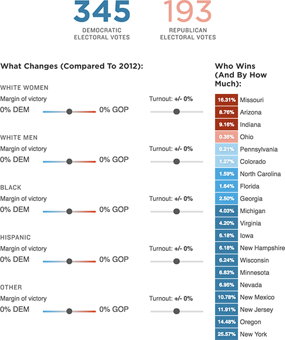

<!DOCTYPE html>
<html lang="en">

<head>
    <title>Graphic : NPR</title>

    <meta name="description" content="">
    <meta http-equiv="X-UA-Compatible" content="IE=edge" />
    <meta name="viewport" content="width=device-width, initial-scale=1, minimum-scale=1, maximum-scale=1, user-scalable=no" />
    <meta http-equiv="content-type" content="text/html; charset=utf-8" />
    <meta name="robots" content="noindex" />
    <link rel="shortcut icon" href="https://media.npr.org/favicon.ico" />

    <base target="_blank">

    

    <!-- Fonts -->
    <script src="https://apps.npr.org/dailygraphics/graphics/fonts/js/lib/webfont.js"></script>
    <script>
    WebFont.load({
        custom: {
            families: [
                'Gotham SSm:n4,n7',
                'Knockout 31 4r:n4'
            ],
            urls: [
                'https://s.npr.org/templates/css/fonts/GothamSSm.css',
                'https://s.npr.org/templates/css/fonts/Knockout.css'
            ]
        },
        timeout: 10000
    });
    </script>

    

    <!-- Configuration -->
    <script type="text/javascript">
        GOOGLE_ANALYTICS_ACCOUNT_ID = 'UA-5828686-75';
        GOOGLE_ANALYTICS_PROJECT_SLUG = 'trump270-simulator-20160622';
    </script>

    <!-- CSS + LESS -->
    
    <link rel="stylesheet" type="text/css" href="css/graphic-header.css?1490384931" />
</head>
<body>
    <!-- Analytics -->
    
    
    <script type="text/javascript" src="js/graphic-header.js?1490384931"></script>

    

    

    <div id="graphic" class="graphic">
        <!--  -->
        <div class="container">
            <!--  -->
            <div id="usage"></div>
            <div id="scenarios"></div>
            <div id="table-totals" class="table-totals"></div>
            <div class="main-content">
                <div id="table-controls" class="table-controls"></div>
                <div id="table-details" class="table-details"></div>
            </div>
        </div>
    </div>
    <div id="footer"></div>

    <script type="text/javascript">
        var HEADERS = {"usage": "<p>Our model takes 2012 presidential election results \u2014 how Barack Obama did against Mitt Romney \u2014 and adjusts them for 2016 demographics in battleground states (along with a few states Donald Trump has said he can win). Obama would win by more. This is what forms our baseline. <strong>Adjust the sliders</strong> to create 2016 scenarios compared with the 2012 baseline \u2014 for two things: margin of victory and turnout.</p>", "subhed_sce1": "If, compared with Mitt Romney in 2012, turnout is higher among <strong class=\"turnout\">white men</strong> (+2 percentage points), and all other voting patterns remain the same, <strong class=\"dem winner\">Hillary Clinton</strong> would still win the&nbsp;election.", "subhed_sce2": "If, compared with Mitt Romney in 2012, Donald Trump gains support among <strong class=\"gop\">white men</strong> (+4 percentage points), and all other voting patterns remain the same, <strong class=\"dem winner\">Hillary Clinton</strong> would still win the&nbsp;election.", "subhed_sce3": "If, compared with Mitt Romney in 2012, Donald Trump gains support among <strong class=\"gop\">white men</strong> (+4 percentage points), turnout is higher among <strong class=\"turnout\">white men</strong> (+2 percentage points), and all other voting patterns remain the same, <strong class=\"gop winner\">Trump</strong> would win the&nbsp;election.", "subhed_sce4": "If, compared with 2012, turnout is higher among <strong class=\"turnout\">white men</strong> (+2 percentage points) and <strong class=\"turnout\">Hispanics</strong> (+2 percentage points) and lower among <strong class=\"turnout\">blacks</strong> (-6 percentage points), and all other voting patterns remain the same, <strong class=\"dem winner\">Hillary Clinton</strong> would still win the&nbsp;election.", "footnote": "", "source": "NPR analysis of Census Bureau data, with help from Brookings Institution demographer William Frey. <a href=\"http://www.npr.org/templates/story/story.php?storyId=483687093#methodology\">Read about our methodology</a>", "credit": "David Eads, Juan Elosua, Asma Khalid, Brittany Mayes and Domenico Montanaro/NPR"};
    </script>


    

        
        
        
        
        
        
        
        

<script id="usage-template" type="text/ractive">
    <div class="usage-wrapper" style="{{#unless interactive}}display: none;{{/unless}}">
        {{{data.usage}}}
    </div>
</script>

<script id="scenarios-template" type="text/ractive">
    <div class="scenario-wrapper" style="{{#if interactive}}display: none;{{else}}{{#unless scenario}}display: none;{{/unless}}{{/if}}">
        {{#if scenario === 'sce1'}}
            <h2>{{{data.subhed_sce1}}}</h2>
        {{elseif scenario === 'sce2'}}
            <h2>{{{data.subhed_sce2}}}</h2>
        {{elseif scenario === 'sce3'}}
            <h2>{{{data.subhed_sce3}}}</h2>
        {{elseif scenario === 'sce4'}}
            <h2>{{{data.subhed_sce4}}}</h2>
        {{/if}}
    </div>
</script>


<script id="margin-table-template" type="text/ractive">
    <div class="margin-table-wrapper">
        <h3>Who Wins (And By How Much)</h3>
        <table>
            <tbody>
                {{#each rows}}
                <tr>
                    {{#this}}
                    <td class="{{winnerClass}} {{marginClass}}" data-tooltip="{{margin}}%">
                    {{margin}}%
                    </td>
                    {{/this}}
                    <th>{{@key}}</th>
                </tr>
                {{/each}}
            </tbody>
        </table>
    </div>
</script>
<script id="results-template" type="text/ractive">
    <div class="dem">
        {{#electoralVotes}}
            <p><span class="dem-votes {{#if this.dem > 270}}winner{{/if}}">{{dem}}</span></p>
        {{/electoralVotes}}
        <p class="votes">Democratic<br />Electoral Votes</p>
    </div>
    <div class="gop">
        {{#electoralVotes}}
            <p><span class="gop-votes {{#if this.gop > 270}}winner{{/if}}">{{gop}}</span></p>
        {{/electoralVotes}}
        <p class="votes">Republican<br />Electoral Votes</p>
    </div>
</script>
<script id="controls-template" type="text/ractive">
    <div class='table-controls-wrapper {{#unless interactive}}disabled{{/unless}} {{#if mobile}}mobile{{/if}}'>
        <div class="table-controls-header">
            <h3>What Changes</h3>
            <h5>Percentage point difference from&nbsp;2012</h5>
        </div>


        {{#each adjustments}}
        <div class="{{@key}}-controls-div {{#if pct !== 0.0 || turnout !== 0.0}} adjusted{{/if}}">
            <h4>{{label}}</h4>
            {{#if interactive}}
            <div class="control-group {{@key}}-pct-group">
                <span class="control-label">Margin{{#unless mobile}} of victory{{/unless}}<span class="label-concat">: </span></span>
                <div class="control-label-mobile">
                    {{#if this.pct == 0}}
                        <span class="control-label-mobile"><strong>+/- 0%</strong></span>
                    {{elseif this.pct > 0}}
                        <span class="gop-slider-label {{#if this.pct > 0}}gop-margin-winner{{/if}}">{{#if pct === 0.0}}{{elseif pct > 0}}+{{else}}-{{/if}}{{(Math.abs(pct * 100)).toFixed(0)}}% GOP</span>
                    {{else}}
                        <span class="dem-slider-label {{#if this.pct < 0}}dem-margin-winner{{/if}}">{{#if pct === 0.0}}{{elseif pct < 0}}+{{else}}-{{/if}}{{(Math.abs(pct * 100)).toFixed(0)}}% DEM</span>
                    {{/if}}
                </div>
                <div class="slider-label label-dem">
                    <span class="dem-slider-label {{#if this.pct < 0}}dem-margin-winner{{/if}}">{{#if pct === 0.0}}{{elseif pct < 0}}+{{else}}-{{/if}}{{(Math.abs(pct * 100)).toFixed(0)}}% DEM</span>
                </div>
                <div class="range-slider">
                    <input id="{{@key}}-pct" type="range" step="0.01" value="{{this.pct}}" min="-0.20" max="0.20">
                </div>
                <div class="slider-label label-gop">
                    <span class="gop-slider-label {{#if this.pct > 0}}gop-margin-winner{{/if}}">{{#if pct === 0.0}}{{elseif pct > 0}}+{{else}}-{{/if}}{{(Math.abs(pct * 100)).toFixed(0)}}% GOP</span>
                </div>
            </div>
            <div class="control-group {{@key}}-turnout-group">
                <span class="control-label turnout">Turnout: <strong>{{#if turnout === 0.0}}+/- {{elseif turnout > 0}}+{{/if}}{{(turnout * 100).toFixed(0)}}%</strong></span>
                <input id="{{@key}}-turnout" type="range" step="0.01" value="{{this.turnout}}" min="-0.20" max="0.20">
            </div>
            {{else}}
            <div class="control-group {{@key}}-pct-group">
                <span class="control-label"><span class="control-label-inner">Margin{{#unless mobile}} of victory{{/unless}}</span><span class="label-concat">: </span></span>
                <div class="control-label-mobile">
                    {{#if this.pct == 0}}
                        <span class="control-label-mobile"><strong>+/- 0%</strong></span>
                    {{elseif this.pct > 0}}
                        <span class="gop-slider-label {{#if this.pct > 0}}gop-margin-winner{{/if}}">{{#if pct === 0.0}}{{elseif pct > 0}}+{{else}}-{{/if}}{{(Math.abs(pct * 100)).toFixed(0)}}% GOP</span>
                    {{else}}
                        <span class="dem-slider-label {{#if this.pct < 0}}dem-margin-winner{{/if}}">{{#if pct === 0.0}}{{elseif pct < 0}}+{{else}}-{{/if}}{{(Math.abs(pct * 100)).toFixed(0)}}% DEM</span>
                    {{/if}}
                </div>
                <div class="slider-label label-dem">
                    <span class="dem-slider-label {{#if this.pct < 0}}dem-margin-winner{{/if}}">{{#if pct === 0.0}}{{elseif pct < 0}}+{{else}}-{{/if}}{{(Math.abs(pct * 100)).toFixed(0)}}% DEM</span>
                </div>
                <div class="range-slider">
                    <input id="{{@key}}-pct" type="range" step="0.01" value="{{this.pct}}" min="-0.10" max="0.10">
                </div>
                <div class="slider-label label-gop">
                    <span class="gop-slider-label {{#if this.pct > 0}}gop-margin-winner{{/if}}">{{#if pct === 0.0}}{{elseif pct > 0}}+{{else}}-{{/if}}{{(Math.abs(pct * 100)).toFixed(0)}}% GOP</span>
                </div>
            </div>
            <div class="control-group {{@key}}-turnout-group">
                <span class="control-label turnout"><span class="control-label-inner">Turnout: <strong>{{#if turnout === 0.0}}+/- {{elseif turnout > 0}}+{{/if}}{{(turnout * 100).toFixed(0)}}%</strong></span></span>
                <input id="{{@key}}-turnout" type="range" step="0.01" value="{{this.turnout}}" min="-0.20" max="0.20">
            </div>
            {{/if}}
            </div>
        {{/each}}
        {{#if interactive}}
        <button class='controls-reset' on-click='restart'>Reset simulation</button>
        {{/if}}
    </div>
</script>

<script id="footer-template" type="text/ractive">
    <div class="credits-wrapper" style="{{#unless footer}}display: none;{{/unless}}">
        {{#if data.footnote}}
        <div class="footnotes">
            <h4>Notes</h4>
                <p>{{{data.footnote}}}</p>
        </div>
        {{/if}}

        <div class="footer">
        {{#if data.source}}<p>Source: {{{ data.source }}}</p>{{/if}}
        {{#if data.credit}}<p>Credit: {{{ data.credit }}}</p>{{/if}}
        </div>
    </div>
</script>


        <script type="text/javascript" src="js/graphic-footer.js?1490384931"></script>

    
</body>
</html>